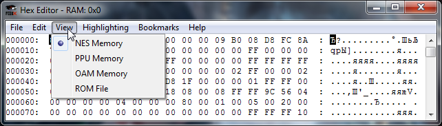

Содержание
Можно переключиться на 4 разных режима.

Здесь расположена память процессора. Включает в себя RAM, регистры, батарейку (при ее наличии) и память ROM'а, подгруженную из ROM File. Размер окна $0000-$FFFF.
Здесь расположена память видеопроцессора. Включает в себя графику фона и спрайтов, атрибуты фона и палитру. Размер окна $0000-$3FFF.
Здесь расположена память спрайтов. Включает в себя копию данных всех 64 спрайтов из NES Memory, обычно из адресов $0200-$02FF. Размер окна минимум $0000-$00FF, дальнейшее увеличение окна лишь отображает копию $0000-$00FF.
Здесь расположены байты из ROM'а. ROM File является аналогией открытия ROM'а в любом другом Hex-редакторе. Включает в себя хедер, память PRG ROM и CHR ROM (при наличии). При отсутствии CHR ROM, последние 8 килобайт отображают копию $0000-$01FF из PPU Memory. Размер окна зависит от размера ROM'а и наличия CHR.